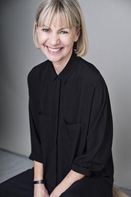

Stephen King |
Books
Stephen Edwin King (born September 21, 1947) is an American author of horror, supernatural fiction, suspense, and fantasy novels. His books have sold more than 350 million copies,[2] many of which have been adapted into feature films, miniseries, television series, and comic books. King has published 61 novels (including seven under the pen name Richard Bachman) and six non-fiction books.[3] He has written approximately 200 short stories,[4][5] most of which have been published in book collections.. |
Issac Asimov's |
Books
Isaac Asimov . January 2, 1920[a] – April 6, 1992) was an American writer and professor of biochemistry at Boston University. He was known for his works of science fiction and popular science. Asimov was a prolific writer who wrote or edited more than 500 books and an estimated 90,000 letters and postcards.[d] His books have been published in 9 of the 10 major categories of the Dewey Decimal Classification.[1] Asimov wrote hard science fiction. Along with Robert A. Heinlein and Arthur C. Clarke, Asimov was considered one of the "Big Three" science fiction writers during his lifetime |
Margaret |
Books
Margaret Eleanor Atwood CC OOnt CH FRSC (born November 18, 1939) is a Canadian poet, novelist, literary critic, essayist, inventor, teacher, and environmental activist. Since 1961, she has published 17 books of poetry, 16 novels, 10 books of non-fiction, eight collections of short fiction, eight children's books, and one graphic novel, as well as a number of small press editions in poetry and fiction. Atwood has won numerous awards and honors for her writing, including the Booker Prize (twice), Arthur C. Clarke Award, Governor General's Award, Franz Kafka Prize, and the National Book Critics and PEN Center USA Lifetime Achievement Awards. |
Kate Mosse |
Books
Katharine Louise Mosse OBE (born 20 October 1961) is an English novelist, non-fiction and short story writer and broadcaster. She is best known for her 2005 novel Labyrinth, which has been translated into more than 37 languages |